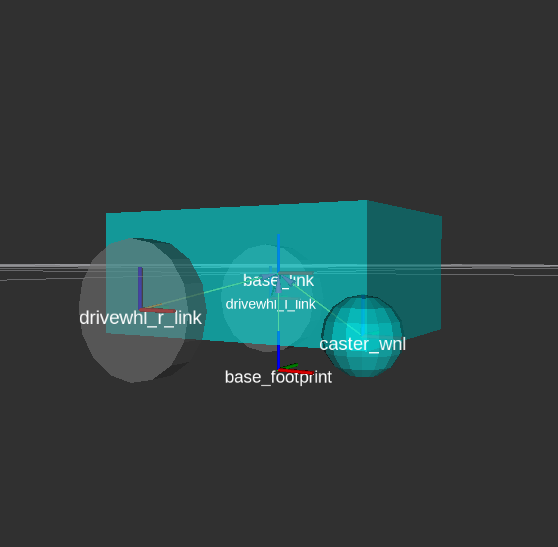
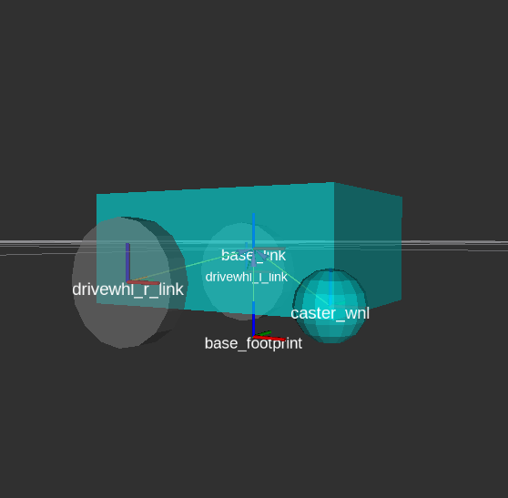

设置URDF
在本指南中，我们将为简单的差动驱动机器人创建统一机器人描述格式 (URDF) 文件，为您提供使用URDF的实践经验。我们也将设置robot state publisher，并在RVIZ中可视化我们的模型。最后，我们将向我们的机器人URDF添加一些运动特性，为模拟目的做准备。这些步骤对于表示用于导航的机器人的所有传感器、硬件和机器人变换是必要的。 [校准@fish]
参见
完整源代码可以找到本教程在 navigation2_tutorials 库下 sam_bot_description 包。注意，资源库包含全代码完成所有教程在本指南。 [校准@fish]
URDF和Robot State Publisher [校准@fish]
如前一教程所述，导航2的要求之一是从 base_link 到各种传感器和参考帧的转换。该变换树的范围可以从只有一个连接的简单树 (从 base_link 到 laser_link ) 或由位于不同位置的多个传感器组成的树 (每个传感器都有自己的坐标框架)。创建多个发布者来处理所有这些坐标框架转换可能会变得乏味。因此，我们将利用机器人状态发布者包发布我们的转换。 [校准@fish]
机器人状态发布者是ROS 2的包，它与tf2包交互以发布所有必要的转换，这些转换可以直接从机器人的几何形状和结构中推断出。我们需要为它提供正确的URDF，它将自动处理发布转换。这对于复杂的变换非常有用，但仍然建议用于更简单的变换树。 [校准@fish]
统一机器人描述格式 (URDF) 是一个表示机器人模型的XML文件。在本教程中，它将主要用于构建与机器人几何相关的转换树，但它也有其他用途。一个例子是如何通过定义诸如材料和网格之类的视觉组件，将其用于可视化ROS的3D可视化工具RVIZ中的机器人模型。另一个例子是如何使用URDF来定义机器人的物理特性。这些特性随后被用于物理模拟器，如Gazebo，以模拟你的机器人将如何在环境中相互作用。 [校准@fish]
URDF的另一个主要功能是它还支持Xacro (XML宏)，以帮助您创建更短且可读的XML，以帮助定义复杂的机器人。我们可以使用这些宏来消除在URDF中重复XML块的需要。Xacro在定义可在整个URDF重复使用的配置常量方面也很有用。 [校准@fish]
参见
如果您想了解更多关于URDF机器人状态出版商，我们鼓励你看看官方 URDF Documentation and Robot State Publisher Documentation _ [校准@fish]
设置环境
在本指南中，我们假设您已经熟悉ROS 2以及如何设置开发环境，因此我们将轻松完成本节中的步骤。 [校准@fish]
让我们开始安装一些额外ROS 2包，我们将使用在本教程。 [校准@fish]
sudo apt install ros-<ros2-distro>-joint-state-publisher-gui
sudo apt install ros-<ros2-distro>-xacro
接下来，为您的项目创建一个目录，初始化一个ROS 2工作区，并为您的机器人命名。对我们来说，我们称之为 sam_bot 。 [校准@fish]
ros2 pkg create --build-type ament_cmake sam_bot_description
编写URDF
参见
本节旨在为您的机器人提供构建URDFs的初学者友好介绍。如果你想了解更多关于URDF和XAcro的信息，我们建议你看看官方的 URDF Documentation _ [校准@fish]
现在我们项目工作区，让我们直接进入写URDF。下面是图像的机器人我们将试图建立。 [校准@fish]
 

{kind=link}
开始，创建名为
sam_bot_description.urdf下src/description输入以下初始内容文件。 [校准@fish]
1<?xml version="1.0"?>
2<robot name="sam_bot" xmlns:xacro="http://ros.org/wiki/xacro">
3
4
5
6</robot>
注解
以下代码片段应放置在 <robot> 标签内。我们建议按照本教程中介绍的相同顺序添加它们。我们还提供了一些行号，让您大致了解在哪里输入代码。这可能与您正在编写的实际文件不同，具体取决于您对空格的使用情况。另请注意，行号假定您正在输入本指南中显示的代码。 [校准@fish]
接下来，让我们定义一些常量使用XAcro属性将重用URDF。 [校准@fish]
4 <!-- Define robot constants -->
5 <xacro:property name="base_width" value="0.31"/>
6 <xacro:property name="base_length" value="0.42"/>
7 <xacro:property name="base_height" value="0.18"/>
8
9 <xacro:property name="wheel_radius" value="0.10"/>
10 <xacro:property name="wheel_width" value="0.04"/>
11 <xacro:property name="wheel_ygap" value="0.025"/>
12 <xacro:property name="wheel_zoff" value="0.05"/>
13 <xacro:property name="wheel_xoff" value="0.12"/>
14
15 <xacro:property name="caster_xoff" value="0.14"/>
这里简要讨论一下这些特性将在我们的urdf中代表什么。 base_* 属性决定了机器人主底盘的尺寸。 wheel_radius 和 wheel_width 定义了机器人的两个后轮的形状。 wheel_ygap 沿着y轴调整车轮和底盘之间的间隙，同时 wheel_zoff 和 wheel_xoff 沿着z轴和x轴适当地定位后轮。最后， caster_xoff 沿着x轴定位前脚轮。 [校准@fish]
让我们定义我们 base_link -此链接将一大盒将作为主要底盘的机器人。在URDF， link 元素描述刚性零件或组件的机器人。的robot state publisher然后利用这些定义来确定坐标系每个链接和发布它们之间的变换。 [校准@fish]
我们也将定义一些链接的视觉属性可使用工具如Gazebo和Rviz显示我们3D模型的机器人。这些属性是 <geometry> 描述链接的形状和 <material> 它描述的颜色。 [校准@fish]
代码块，我们访问 base 属性机器人常数部分我们定义之前 ''${property}'' 语法。此外，我们也套装材质颜色主要底盘 Cyan 。注意我们设置这些参数 <visual> 标签所以他们只会应用视觉参数不影响任何碰撞或物理性质。 [校准@fish]
17 <!-- Robot Base -->
18 <link name="base_link">
19 <visual>
20 <geometry>
21 <box size="${base_length} ${base_width} ${base_height}"/>
22 </geometry>
23 <material name="Cyan">
24 <color rgba="0 1.0 1.0 1.0"/>
25 </material>
26 </visual>
27 </link>
接下来，让我们定义一个 base_footprint 链接。 base_footprint 链是一个虚拟 (非物理) 链，没有维度或碰撞区域。它的主要目的是使各种包装确定投射到地面的机器人的中心。例如，Navigation2使用此链接来确定其避障算法中使用的圆形Footprint的中心。同样，我们将此链接设置为无尺寸，并且将机器人的中心投影到地平面时位于哪个位置。 [校准@fish]
后定义base_link，我们然后添加接头连接到 base_link 。在URDF， joint 元素描述运动学和动力学性能坐标系。对于这种情况，我们将定义 fixed 接头适当偏移我们 base_footprint 环节适当位置基于以上描述。记住我们要设置我们base_footprint的接地平面投射中心主要底盘，因此我们的 wheel_radius 和 wheel_zoff 的适当位置沿z轴。 [校准@fish]
29 <!-- Robot Footprint -->
30 <link name="base_footprint"/>
31
32 <joint name="base_joint" type="fixed">
33 <parent link="base_link"/>
34 <child link="base_footprint"/>
35 <origin xyz="0.0 0.0 ${-(wheel_radius+wheel_zoff)}" rpy="0 0 0"/>
36 </joint>
现在，我们将为我们的机器人增加两个大型驱动轮。为了使我们的代码更简洁并避免重复，我们将使用宏来定义将使用不同参数重复的代码块。我们的宏将有3个参数: prefix ，它简单地为我们的链接和联名添加了一个前缀，并且 x_reflect 和 y_reflect 使我们能够分别翻转车轮相对于x轴和y轴的位置。在这个宏中，我们还可以定义单个车轮的视觉特性。最后，我们还将定义一个 continuous 接头，以允许我们的车轮绕轴自由旋转。这个接头也将我们的车轮连接到适当位置的 base_link 。 [校准@fish]
在此代码块的末尾，我们将使用刚刚通过 “xacro: wheel” 标签制作的宏来实例化两个轮子。请注意，我们还将参数定义为在机器人背面的两侧都有一个轮子。 [校准@fish]
38 <!-- Wheels -->
39 <xacro:macro name="wheel" params="prefix x_reflect y_reflect">
40 <link name="${prefix}_link">
41 <visual>
42 <origin xyz="0 0 0" rpy="${pi/2} 0 0"/>
43 <geometry>
44 <cylinder radius="${wheel_radius}" length="${wheel_width}"/>
45 </geometry>
46 <material name="Gray">
47 <color rgba="0.5 0.5 0.5 1.0"/>
48 </material>
49 </visual>
50 </link>
51
52 <joint name="${prefix}_joint" type="continuous">
53 <parent link="base_link"/>
54 <child link="${prefix}_link"/>
55 <origin xyz="${x_reflect*wheel_xoff} ${y_reflect*(base_width/2+wheel_ygap)} ${-wheel_zoff}" rpy="0 0 0"/>
56 <axis xyz="0 1 0"/>
57 </joint>
58 </xacro:macro>
59
60 <xacro:wheel prefix="drivewhl_l" x_reflect="-1" y_reflect="1" />
61 <xacro:wheel prefix="drivewhl_r" x_reflect="-1" y_reflect="-1" />
接下来，我们将在机器人的前面添加一个脚轮。我们将把这个轮子建模为一个球体，以保持事情简单。同样，我们定义了车轮的几何形状、材料和接头，以便在适当的位置将其连接到 base_link 。 [校准@fish]
63 <!-- Caster Wheel -->
64 <link name="front_caster">
65 <visual>
66 <geometry>
67 <sphere radius="${(wheel_radius+wheel_zoff-(base_height/2))}"/>
68 </geometry>
69 <material name="Cyan">
70 <color rgba="0 1.0 1.0 1.0"/>
71 </material>
72 </visual>
73 </link>
74
75 <joint name="caster_joint" type="fixed">
76 <parent link="base_link"/>
77 <child link="front_caster"/>
78 <origin xyz="${caster_xoff} 0.0 ${-(base_height/2)}" rpy="0 0 0"/>
79 </joint>
就这样!我们建立URDF简单差速驱动机器人。在下一节中，我们将重点建设ROS包含我们URDF，启动robot state publisher，可视化机器人RVIz。 [校准@fish]
Build和Launch [校准@fish]
参见
本教程的启动文件改编自官方的 URDF Tutorials for ROS 2 [校准@fish]
让我们开始这个部分添加一些依赖所需一旦我们建立这个项目。开辟根项目目录并添加以下行 package.xml (最好是后 <buildtool_depend> 标签) [校准@fish]
<exec_depend>joint_state_publisher</exec_depend>
<exec_depend>joint_state_publisher_gui</exec_depend>
<exec_depend>robot_state_publisher</exec_depend>
<exec_depend>rviz</exec_depend>
<exec_depend>xacro</exec_depend>
接下来，让我们创建启动文件。启动文件使用ROS 2带来必要的节点的包。从根项目，创建目录 launch 和 display.launch.py 文件。launch文件下面启动机器人发行商节点ROS 2使用我们URDF发布变换的机器人。此外，启动文件还自动启动RVIZ所以我们可以想象我们机器人定义URDF。复制和粘贴下面的代码段的 display.launch.py 文件。 [校准@fish]
import launch
from launch.substitutions import Command, LaunchConfiguration
import launch_ros
import os
def generate_launch_description():
pkg_share = launch_ros.substitutions.FindPackageShare(package='sam_bot_description').find('sam_bot_description')
default_model_path = os.path.join(pkg_share, 'src/description/sam_bot_description.urdf')
default_rviz_config_path = os.path.join(pkg_share, 'rviz/urdf_config.rviz')
robot_state_publisher_node = launch_ros.actions.Node(
package='robot_state_publisher',
executable='robot_state_publisher',
parameters=[{'robot_description': Command(['xacro ', LaunchConfiguration('model')])}]
)
joint_state_publisher_node = launch_ros.actions.Node(
package='joint_state_publisher',
executable='joint_state_publisher',
name='joint_state_publisher',
condition=launch.conditions.UnlessCondition(LaunchConfiguration('gui'))
)
joint_state_publisher_gui_node = launch_ros.actions.Node(
package='joint_state_publisher_gui',
executable='joint_state_publisher_gui',
name='joint_state_publisher_gui',
condition=launch.conditions.IfCondition(LaunchConfiguration('gui'))
)
rviz_node = launch_ros.actions.Node(
package='rviz2',
executable='rviz2',
name='rviz2',
output='screen',
arguments=['-d', LaunchConfiguration('rvizconfig')],
)
return launch.LaunchDescription([
launch.actions.DeclareLaunchArgument(name='gui', default_value='True',
description='Flag to enable joint_state_publisher_gui'),
launch.actions.DeclareLaunchArgument(name='model', default_value=default_model_path,
description='Absolute path to robot urdf file'),
launch.actions.DeclareLaunchArgument(name='rvizconfig', default_value=default_rviz_config_path,
description='Absolute path to rviz config file'),
joint_state_publisher_node,
joint_state_publisher_gui_node,
robot_state_publisher_node,
rviz_node
])
参见
有关ROS 2中发射系统的更多信息，您可以查看官方 ROS 2 Launch System Documentation _ [校准@fish]
为了使可视化过程更加简单，我们提供了一个RVIz配置文件，该文件将在启动包时加载。此配置文件使用正确的设置初始化RVIz，以便您可以在机器人启动后立即查看它。创建目录 rviz 在根项目和文件 urdf_config.rviz 下。将以下内容作为 urdf_config.rviz 的内容 [校准@fish]
Panels:
- Class: rviz_common/Displays
Help Height: 78
Name: Displays
Property Tree Widget:
Expanded:
- /Global Options1
- /Status1
- /RobotModel1/Links1
- /TF1
Splitter Ratio: 0.5
Tree Height: 557
Visualization Manager:
Class: ""
Displays:
- Alpha: 0.5
Cell Size: 1
Class: rviz_default_plugins/Grid
Color: 160; 160; 164
Enabled: true
Name: Grid
- Alpha: 0.6
Class: rviz_default_plugins/RobotModel
Description Topic:
Depth: 5
Durability Policy: Volatile
History Policy: Keep Last
Reliability Policy: Reliable
Value: /robot_description
Enabled: true
Name: RobotModel
Visual Enabled: true
- Class: rviz_default_plugins/TF
Enabled: true
Name: TF
Marker Scale: 0.3
Show Arrows: true
Show Axes: true
Show Names: true
Enabled: true
Global Options:
Background Color: 48; 48; 48
Fixed Frame: base_link
Frame Rate: 30
Name: root
Tools:
- Class: rviz_default_plugins/Interact
Hide Inactive Objects: true
- Class: rviz_default_plugins/MoveCamera
- Class: rviz_default_plugins/Select
- Class: rviz_default_plugins/FocusCamera
- Class: rviz_default_plugins/Measure
Line color: 128; 128; 0
Transformation:
Current:
Class: rviz_default_plugins/TF
Value: true
Views:
Current:
Class: rviz_default_plugins/Orbit
Name: Current View
Target Frame: <Fixed Frame>
Value: Orbit (rviz)
Saved: ~
最后，让我们修改 CMakeLists.txt 文件项目根目录包括文件我们刚刚创建的包安装过程。添加以下片段 CMakeLists.txt 文件最好是以上 if(BUILD_TESTING) 线: [校准@fish]
install(
DIRECTORY src launch rviz
DESTINATION share/${PROJECT_NAME}
)
我们现在准备使用colcon构建我们的项目。导航到项目根目录并执行以下命令。 [校准@fish]
colcon build
. install/setup.bash
成功构建之后，执行以下命令安装ROS 2包和启动项目。 [校准@fish]
ros2 launch sam_bot_description display.launch.py
ROS 2现在推出机器人发行商节点启动RVIZ使用我们URDF。我们将看一看我们机器人RVIZ节。 [校准@fish]
使用RVIZ的可视化
这个RVIZ是一种机器人可视化工具，它使我们能够使用其URDF查看机器人的3D模型。使用上一节中的命令成功启动后，这个RVIZ现在应该可以在屏幕上看到，并且应该如下图所示。你可能需要四处走动并操纵视图来好好看看你的机器人。 [校准@fish]

如您所见，我们已经成功创建了一个简单的差动驱动机器人，并在RVIz中将其可视化。没有必要在RVIz中可视化你的机器人，但这是一个很好的步骤，看看你是否正确定义了你的URDF。这有助于确保robot state publisher发布了正确的转换。 [校准@fish]
你可能注意到另一个窗口启动-这是GUI联合状态出版商。联合国家发布另一个ROS 2包出版国家我们固定接头。你可以操纵这个出版商通过小GUI和新姿势的接头将反映在RVIz。滑动酒吧任何两车轮旋转这些接头。你可以看到这个动作通过查看RVIZ你扫滑块联合状态出版商GUI。 [校准@fish]

注解
我们不会交互多这个包裹Nav2，但如果你想了解联合状态出版商，看看官方 Joint State Publisher Documentation 。 [校准@fish]
此时，您可能已经决定停止本教程，因为我们已经实现了为简单的差动驱动机器人创建URDF的目标。robot state publisher现在发布源自URDF的转换。这些转换现在可以被其他包装 (如Nav2) 用来获取关于你的机器人的形状和结构的信息。然而，为了在模拟中正确使用这个URDF，我们需要物理特性，以便机器人像真正的机器人一样对物理环境做出反应。可视化字段仅用于可视化，而不是碰撞，因此您的机器人将直接穿过障碍物。我们将在下一节中将这些属性添加到URDF中。 [校准@fish]
添加物理属性
作为本指南的附加部分，我们将修改当前的URDF，以包括机器人的一些运动特性。这些信息可能会被物理模拟器 (如Gazebo) 用来模拟和模拟我们的机器人在虚拟环境中的行为。 [校准@fish]
让我们首先定义包含我们在项目中使用的几何原语的惯性特性的宏。将以下片段放在URDF中的常量部分之后: [校准@fish]
17 <!-- Define intertial property macros -->
18 <xacro:macro name="box_inertia" params="m w h d">
19 <inertial>
20 <origin xyz="0 0 0" rpy="${pi/2} 0 ${pi/2}"/>
21 <mass value="${m}"/>
22 <inertia ixx="${(m/12) * (h*h + d*d)}" ixy="0.0" ixz="0.0" iyy="${(m/12) * (w*w + d*d)}" iyz="0.0" izz="${(m/12) * (w*w + h*h)}"/>
23 </inertial>
24 </xacro:macro>
25
26 <xacro:macro name="cylinder_inertia" params="m r h">
27 <inertial>
28 <origin xyz="0 0 0" rpy="${pi/2} 0 0" />
29 <mass value="${m}"/>
30 <inertia ixx="${(m/12) * (3*r*r + h*h)}" ixy = "0" ixz = "0" iyy="${(m/12) * (3*r*r + h*h)}" iyz = "0" izz="${(m/2) * (r*r)}"/>
31 </inertial>
32 </xacro:macro>
33
34 <xacro:macro name="sphere_inertia" params="m r">
35 <inertial>
36 <mass value="${m}"/>
37 <inertia ixx="${(2/5) * m * (r*r)}" ixy="0.0" ixz="0.0" iyy="${(2/5) * m * (r*r)}" iyz="0.0" izz="${(2/5) * m * (r*r)}"/>
38 </inertial>
39 </xacro:macro>
让我们先使用 <collision> 标签在我们的 base_link 上增加碰撞区域。我们还将使用我们之前定义的box_inertia宏为我们的 base_link 添加一些惯性特性。在我们的URDF中，在base_link的 “<链接名称 = "base_link" >” 标签中包含以下代码片段。 [校准@fish]
52 <collision>
53 <geometry>
54 <box size="${base_length} ${base_width} ${base_height}"/>
55 </geometry>
56 </collision>
57
58 <xacro:box_inertia m="15" w="${base_width}" d="${base_length}" h="${base_height}"/>
接下来，让我们对车轮宏执行相同的操作。在URDF中的wheel宏的 “<link name = " ${prefix}_ link ">” 标签中包含以下代码片段。 [校准@fish]
83 <collision>
84 <origin xyz="0 0 0" rpy="${pi/2} 0 0"/>
85 <geometry>
86 <cylinder radius="${wheel_radius}" length="${wheel_width}"/>
87 </geometry>
88 </collision>
89
90 <xacro:cylinder_inertia m="0.5" r="${wheel_radius}" h="${wheel_width}"/>
最后，让我们为我们的球形脚轮添加类似的特性。在URDF脚轮的 “<link name = "front_caster" >” 标签中包含以下内容。 [校准@fish]
114 <collision>
115 <origin xyz="0 0 0" rpy="0 0 0"/>
116 <geometry>
117 <sphere radius="${(wheel_radius+wheel_zoff-(base_height/2))}"/>
118 </geometry>
119 </collision>
120
121 <xacro:sphere_inertia m="0.5" r="${(wheel_radius+wheel_zoff-(base_height/2))}"/>
注解
我们没有添加任何惯性或碰撞属性我们 base_footprint 链接，因为这是虚拟非物理链路。 [校准@fish]
构建您的项目，然后使用上一节中的相同命令启动RViz。 [校准@fish]
colcon build
. install/setup.bash
ros2 launch sam_bot_description display.launch.py
您可以通过在左窗格的 RobotModel 下启用 Collision Enabled 来验证是否正确设置了碰撞区域 (如果您也关闭 Visual Enabled ，可能会更容易看到)。在本教程中，我们定义了一个与我们的视觉属性相似的碰撞区域。请注意，情况可能并不总是这样，因为您可能会根据机器人的外观选择更简单的碰撞区域。 [校准@fish]
现在，我们必须在这里停下来，因为我们需要设置更多的组件来真正开始在Gazebo模拟我们的机器人。在这些设置指南的过程中，我们将回到这个项目，一旦我们到达模拟部分，我们最终将看到我们的机器人在虚拟环境中移动。这项工作中缺少的主要组件是模拟机器人控制器所需的模拟插件。我们将介绍这些内容，并将它们添加到相应部分的URDF中。 [校准@fish]